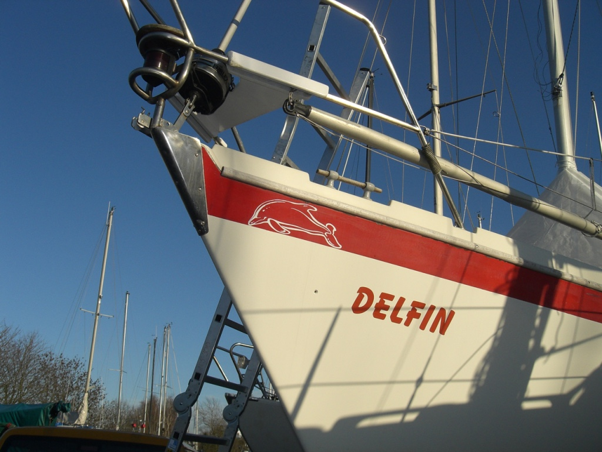
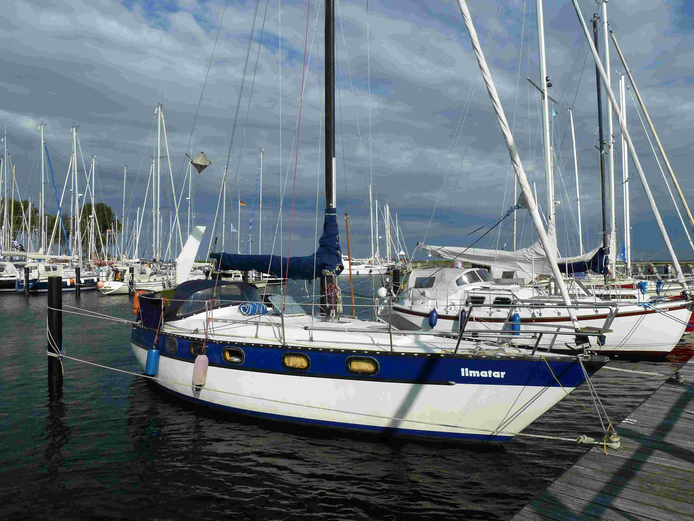

Der Bereich Segeln ist die kleinste Sparte im Verein.
Seine 13 Mitglieder sind Nutzer und Instandhalter von 2
Segelbooten mit Standorten in Monnickendam und Naarden, Niederlande.
Die Spartenmitglieder werden angehalten, im Rahmen ihrer Möglichkeiten
bei der Instandhaltung und Wartung der Boote aktiv mitzuwirken,
da die finanziellen Mittel der Segelsparte begrenzt sind.
Gesegelt wird mit zwei Booten:
|  |  | ||
|---|---|---|---|
| Typ | Bandholm 27 | Phantom 32 | |
| Bootsname | "DELFIN" | "ILMATAR" | |
| Segelbootstyp | Kielyacht | Kielyacht | |
| Länge | 8,30 m | 9,90 m | |
| Segelfläche | 38 qm | 56 qm | |
| Anzahl Kojen | 4 | max. 5 | |
| Motor | Einbaudiesel 13 PS | Einbaudiesel 20 PS | |
| Kontakt | NN | NN |